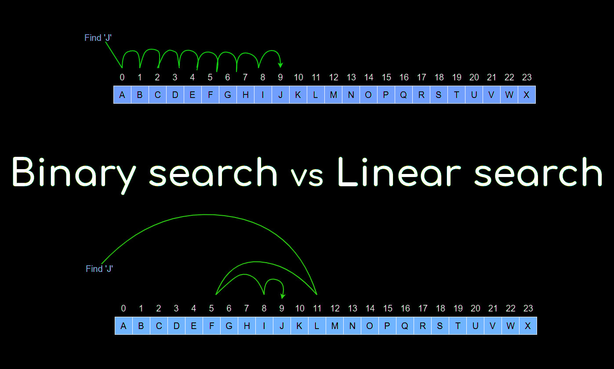

Tema 7
Contents
Tema 7#
Disseny algorísmic#
Hem dedicat tot el curs aprendre a fer programes que funcionin de la manera esperada en tots els casos, que siguin fàcils d’entendre i també de modificar.
Per altra banda, no ens hem preocupat gens del temps que tarden els nostres programes ni de la qualitat dels nostres algorismes. Un exemple clar són els exercicis del Tema 4 on hem treballat amb seqüències numèriques i la nostra estratègia era la d’usar la força bruta per fer una cerca en tot el rang de valors disponibles.
En aquest tema realitzarem una introducció al concepte de cost computacional dels algorismes, analitzarem els algorismes de cerca i introduirem els algorismes d’ordenació.
L’ordenació és una aplicació fonamental en computació. La majoria de les dades produïdes per un programa estan ordenades d’alguna manera, i molts dels còmputs que un programa ha de realitzar són més eficients si les dades sobre els quals operen estan ordenades. Un dels tipus d’operació que més es beneficien de fer feina sobre un conjunt de dades ordenades és la recerca d’una informació.
Complexitat Computacional#
A classe hem vist que el mateix problema pot tenir diferents solucions, cada una d’aquestes solucions pot tenir diferent eficiència (rapidesa d’execució). Així, per exemple, un problema tan fàcil com multiplicar dos nombres enters és resolt mitjançant dos algoritmes diferents un a Anglaterra i un altre a la resta d’Europa. Una altra forma molt més curiosa de realitzar la multiplicació dels nombres enters és el mètode rus, un mètode més complex que els anteriors i que requereix realitzar un nombre d’operacions matemàtiques bastant superior, tot i que obté el mateix resultat.
Més informació de la multiplicació rusa
Quan hem de seleccionar un algorisme per resoldre un problema concret, és important determinar els recursos computacionals necessaris: temps de computació i espai d’emmagatzematge en memòria, de moment no ens ocuparem de l’espai d’emmagatzematge. És important remarcar que l’eficiència d’un algoritme no pot mesurar-se en unitats de temps, ja que cada ordinador té característiques pròpies i el temps d’execució del mateix programa en dues màquines diferents pot variar.
Principi d’invariància
Per estudiar la complexitat computacional dels algoritmes es pren per cert el principi d’invariància: dues implementacions diferents del mateix algoritme no difereixen en la seva eficiència més que en una constant multiplicativa; és a dir, si dues implementacions del mateix algorisme necessiten t(n)1 i t(n) 2 unitats de temps, on n és la mida del vector d’entrada, llavors hi ha un c > 0 tal que t(n) 1 < c * t(n)2.
Aquest principi permet concloure que un canvi en la màquina on s’executa un algorisme proporciona una millora d’un factor constant, mentre que les millores que depenen del nombre de dades que processa l’algorisme hauran de ser causades per canvis en el mateix algorisme.
Cost computacional d’un algorisme
El càlcul de l’eficiència d’un algorisme es basa a comptar el nombre d’operacions elementals que realitza. Per operació elemental s’entén una operació el temps d’execució de la qual és constant. En la següent imatge veim les funcions dels costs computacionals més usats i el seu increment d’execució en unitats de temps segons l’increment de la mida del conjunt de dades a tractar.
Funcions de cost:

Algorismes de cerca#
Nosaltres ja hem treballat els algorismes de cerca, de manera general, un problema de cerca es pot enunciar de la següent manera: donat un conjunt d’elements, determinar si un element es troba en el conjunt o no.
Fins ara només hem vist un tipus de cerca, però veurem que en tenim certes variacions. L’elecció depèn de la forma en què es troben organitzades les dades: si es troben ordenades, si s’ignora la seva disposició o si es sap que estan generades a l’atzar.
Cerca seqüencial#
És l’algorisme de cerca més simple, menys eficient i que menys precondicions requereix: no requereix coneixements sobre el conjunt de recerca ni accés aleatori. Consisteix a comparar cada element del conjunt de recerca amb el valor desitjat fins que aquest sigui trobat o fins que trobem el final de la seqüència. El pitjor dels casos consisteix a haver de comparar amb tots els elements de la seqüència abans de poder dir si l’element és allà o no, direm que el seu cost computacional és lineal, ja que depèn linealment del nombre d’elements del conjunt.
Suposarem que les dades es troben en una llista, l’algorisme de cerca sobre conjunts que obtenim de lectures del teclat i de fitxers es troben en altres capítols d’aquests apunts.
Algorisme
Dades necessàries
vec: llista en la que es vol cercar la dada.
mida: mida del vector.
dada: element a cercar.
Variables necessàries
trobat: variable booleana.
idx: index a consultar.
trobat = False
idx = 0
mentre idx < mida i no trobat:
si vec[idx] == dada:
trobat = True
idx = idx + 1
Cerca binària o dicotòmica#
És un mètode molt eficient, però té diversos prerequisits:
El conjunt de cerca ha d’estar ordenat.
Es pot accedir als diversos elements de la seqüència. Accés aleatòri.
Aquest algoritme compara la dada cercada amb l’element central del conjunt. Segons sigui menor o major es prossegueix la recerca amb el subconjunt anterior o posterior, respectivament a l’element central, i així successivament.
Algorisme
Dades necessàries
vec: llista en la qual es vol cercar la dada.
mida: mida del vector.
dada: element a cercar.
Variables necessàries
centre: subindex central de l’interval.
inf: límit inferior de l’interval.
sup: límit superior de l’interval.
inf = 0
sup = mida-1
trobat = False
mentre inf <= sup i no trobat:
centre = ((sup - inf) / 2) + inf
si vec[centre] == dada:
trobat = True
sino dada < vec[centre]:
sup = centre - 1
sino:
inf = centre + 1
En el millor cas, la dada és l’element que es troba a la meitat, es realitza 1 iteració. En el cas més desfavorable,
el nombre d’iteracions és el menor enter K que verifica 2K = mida del conjunt. El seu ordre de complexitat
és logarítmic, això implica que quan realitzam una cerca binària només comparam amb el log
A continuació veureu una taula que compara la cerca binària amb la cerca seqüencial. Es comprova que per a conjunts de dades grans la recerca binària segueix sent eficient mentre que la seqüencial es va degradant. La taula mostra el nombre d’elements a avaluar pels dos algorismes per trobar un element en un conjunt de dades.
Mida del conjunt |
Cerca seqüencial |
Cerca binària |
|---|---|---|
1 |
1 |
1 |
10 |
10 |
4 |
1000 |
1000 |
11 |
5000 |
5000 |
14 |
100000 |
100000 |
18 |
1000000 |
1000000 |
21 |
A continuació teniu una comparació gràfica dels mètodes de cerca lineal (seqüencial) i dicotòmica:

En aquest enllaç teniu una comparació visual dels dos algorismes Aquí
{kind=link}
Implementació de les cerques#
A continuació teniu l’implementació dels dos tipus de cerques en una funció que retorna un valor booleà que defineix si ha trobat o no l’element. Les dues funcions reben 2 paràmetres, el conjunt sobre el qual cercar i el valor a cercar.
import random
def generar_llista(n_elements, creixent=True):
llista = [1]
for i in range(1, n_elements):
aleatori = random.randint(1, 9)
# si es creixent sera ordenada
if creixent:
aleatori += llista[i-1]
llista.append(aleatori)
return llista
def cerca_sequencial(llista, x):
trobat = False
i = 0
while i < len(llista) and not trobat:
if llista[i] == x:
trobat = True
i = i + 1
return trobat
def cerca_binaria(llista, x):
esq = 0 # esq guarda l'index de l'inici del segment
dret = len(llista) -1 # dret guarda l'index del final del segment
trobat = False
while esq <= dret and not trobat: #mentre
mitj = (esq + dret) // 2 # sempre calculam
print("DEBUG:", "esquerra:", esq, "dreta:", dret, "mitj:", mitj, "valor:", llista[mitj])
# si el valor d'enmig es el que cercavem ja ho tenim
if llista[mitj] == x:
trobat = True
# si el valor del punt mitj es major que x, cercam en el segment [esq, mitj-1], descartant
# l'altra part del conjunt derecha
elif llista[mitj] > x:
dret = mitj-1
# sino, seguim cercant en l'altre segment
# [mitj+1, dret], descartando la izquierda
else:
esq = mitj+1
# si arribam aqui no hem trobat l'element que cercam
return trobat
n_elements = 20
llista = generar_llista(n_elements)
%%time
print(llista)
cerca_binaria(llista, 64)
[1, 5, 12, 19, 25, 26, 30, 37, 44, 45, 51, 60, 69, 74, 75, 80, 84, 87, 89, 92]
DEBUG: esquerra: 0 dreta: 19 mitj: 9 valor: 45
DEBUG: esquerra: 10 dreta: 19 mitj: 14 valor: 75
DEBUG: esquerra: 10 dreta: 13 mitj: 11 valor: 60
DEBUG: esquerra: 12 dreta: 13 mitj: 12 valor: 69
CPU times: total: 0 ns
Wall time: 0 ns
False
llista = generar_llista(n_elements)
%%time
cerca_sequencial(llista, 1000)
CPU times: total: 0 ns
Wall time: 0 ns
False
Ordenació#
L’ordenació és el procés d’organitzar un conjunt de dades en algun ordre o seqüència específica, pot ser creixent o decreixent per dades numèriques o l’ordre alfabètic per caràcters o strings. Els algoritmes d’ordenació permuten els elements del conjunt de dades fins a aconseguir l’ordre desitjat.
Per aconseguir el nostre objectiu usarem dues operacions bàsiques: la comparació i l’intercanvi. Existeixen molts algorismes d’ordenació amb diferents avantatges i inconvenients. En aquest tema veurem el més bàsic de tots.
Mètode de la bombolla#
Es basa en recórrer l’estructura de dades (en el nostre cas una llista) un cert nombre de vegades, comparant parells de valors que ocupen posicions adjacents (0-1,1-2, …). Si les dues dades que comparam no estan ordenades, s’intercanvien. Aquesta operació es repeteix n-1 vegades, sent n la mida del conjunt de dades d’entrada. Al final de la darrera passada l’element més gran estarà en darrera posició; en la segona, el segon element arribarà a la penúltima, i així sucesivament.
El seu nom es deu al fet que l’element de major valor puja a la posició final de l’array, a l’igual que les bombolles d’aire en un dipòsit pugen a la part superior. Per això ha de realitzar un recorregut pas a pas des de la seva posició inicial fins a la posició final de l’array.
Com hem comentat anteriorment, aquest algorisme és el més bàsic d’ordenació i és que el seu cost computacional és molt alt, d’aquest tipus d’algorismes s’en diuen quadratics. En el millor cas, si tenim la llista ordenada, haurem de fer tantes comparacions com el nombre d’elements té la llista i en el pitjor dels casos el nombre de comparacions serà el nombre d’elements de la llista al quadrat.
Algorisme
Dades necessàries
vec: llista que es vol ordenar.
mida: mida de la llista.
Variables necessàries
i pren tots els valors de 1 a mida:
j pren tots els valors de 0 a mida - 1:
si vec[j] > vec[j + 1]:
aux = vec[j]
vec[j] = vec[j+1]
vec[j+1] = aux
Explicació gràfica#

Esquema visual de l’algorisme de la bombolla.
Implementació de l’algorisme#
def bubbleSort(llista):
mida = len(llista)
for i in range(1, mida):
for j in range(0, mida-1):
if llista[j] >llista[j+1]:
llista[j], llista[j+1] = (llista[j+1], llista[j])
print(llista)
return llista
llista = generar_llista(10, False)
print(llista)
llista = bubbleSort(llista)
[1, 7, 2, 7, 9, 4, 3, 3, 5, 8]
[1, 2, 7, 7, 4, 3, 3, 5, 8, 9]
[1, 2, 7, 4, 3, 3, 5, 7, 8, 9]
[1, 2, 4, 3, 3, 5, 7, 7, 8, 9]
[1, 2, 3, 3, 4, 5, 7, 7, 8, 9]
[1, 2, 3, 3, 4, 5, 7, 7, 8, 9]
[1, 2, 3, 3, 4, 5, 7, 7, 8, 9]
[1, 2, 3, 3, 4, 5, 7, 7, 8, 9]
[1, 2, 3, 3, 4, 5, 7, 7, 8, 9]
[1, 2, 3, 3, 4, 5, 7, 7, 8, 9]
Millora de l’algorisme#
Hi ha un canvi de l’algorisme que permet evitar realitzar totes les iteracions del bucle exterior, si ens adonam que la llista ja està ordenada podem aturar d’ordenar.
Dades necessàries
vec: llista que es vol ordenar.
mida: mida de la llista.
Variables necessàries
actualitzat: variable booleana
actualitzat = True
mentre actualitzat:
actualitzat = False
j pren tots els valors de 0 a mida - 1
si vec[j] > vec[j + 1]:
aux = vec[j]
vec[j] = vec[j+1]
vec[j+1] = aux
actualitzat = True
def bubbleSort_curt(llista):
actualitzat = True
mida = len(llista)
while actualitzat:
actualitzat = False
for j in range(0, mida-1):
if llista[j] > llista[j+1] :
llista[j], llista[j+1] = llista[j+1], llista[j]
actualitzat = True
print(llista)
return llista
llista = generar_llista(10, False)
print(llista)
llista = bubbleSort_curt(llista)
[1, 5, 1, 3, 9, 8, 5, 4, 8, 8]
[1, 1, 3, 5, 8, 5, 4, 8, 8, 9]
[1, 1, 3, 5, 5, 4, 8, 8, 8, 9]
[1, 1, 3, 5, 4, 5, 8, 8, 8, 9]
[1, 1, 3, 4, 5, 5, 8, 8, 8, 9]
[1, 1, 3, 4, 5, 5, 8, 8, 8, 9]
Altres algorismes d’ordenació#
En aquesta secció hem realitzat una introducció als algorismes d’ordenació i hem vist el funcionament del més bàsic, en successives assignatures en veureu d’altres molt més avançats i per tant més complexes però també molt més eficients. Alguns dels més coneguts són:
Algorisme de selecció: Aquest mètode considera que la llista està formada per 2 parts: una part ordenada que al principi estarà buida; i una part desordenada que a principi comprèn tot l’array i al final de l’algorisme estarà buida. El seu cost computacional és el mateix que el de l’algorisme de la bombolla però requereix menys operacions.
Algorisme d’inserció: És un mètode molt similar a l’anterior. Enlloc de tenir 2 parts es realitza l’ordenació inserint els elements en la posició que els hi toca de la llista. Tal com l’algorisme de selecció el seu cost computacional és el mateix que el de la bombolla però necessita menys operacions.
Quicksort: El mètode d’ordenació ràpida (Quicksort) per ordenar els elements d’una llista es basa en el fet que és més ràpid i fàcil ordenar dues llistes petites que una llista gran. Es basa en l’estratègia típica de “divideix i venceràs”. La llista a ordenar es divideix en dues parts: una contindrà tots els valors menors o iguals a un cert valor (que se sol anomenar pivot) i l’altra amb els valors més grans que aquest valor.